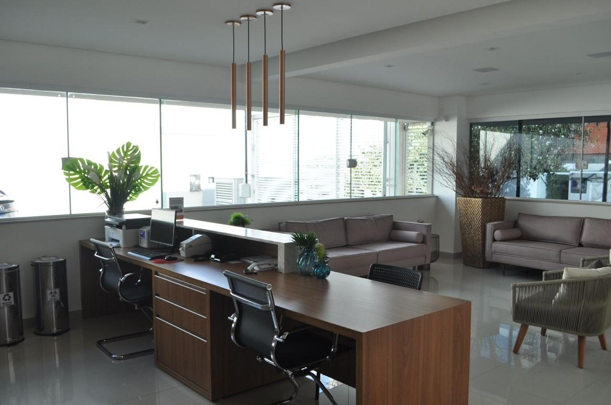
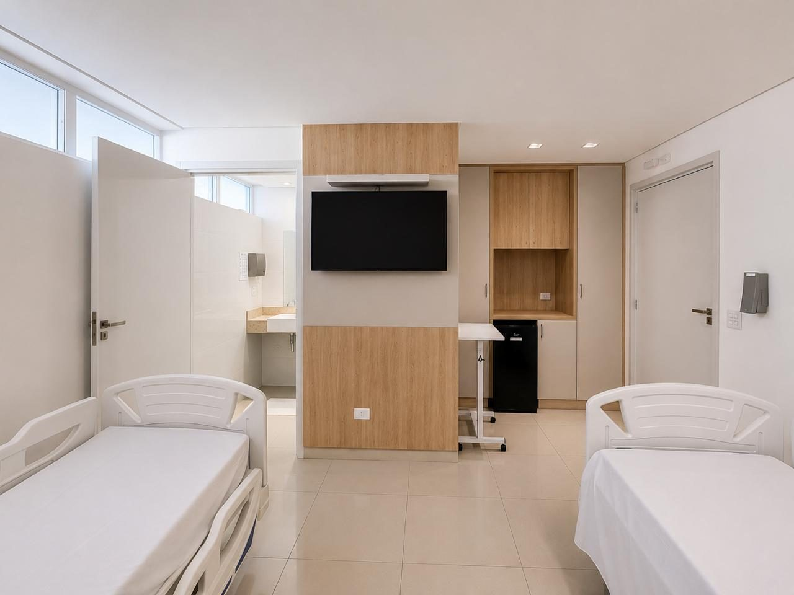
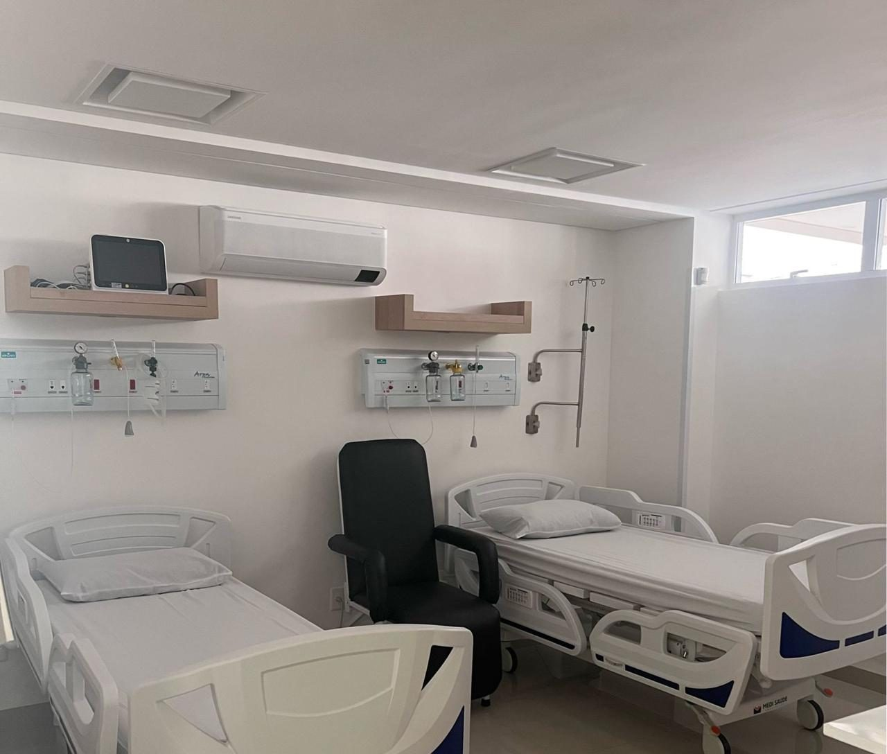
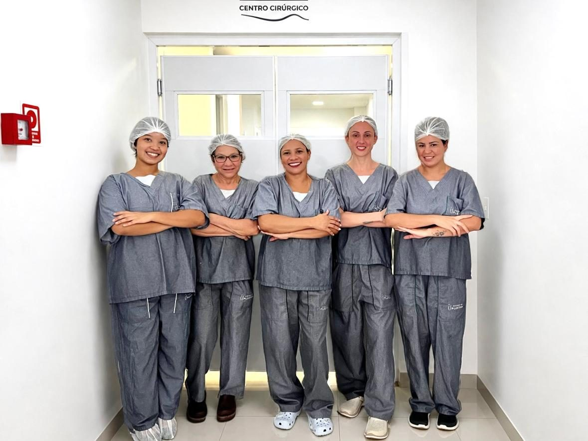
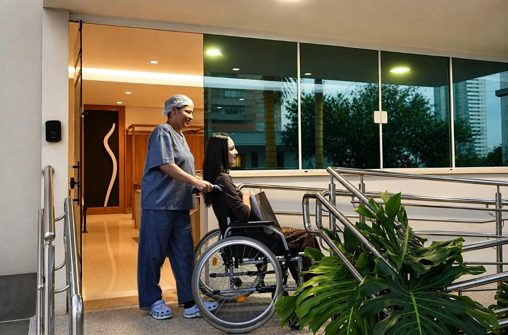
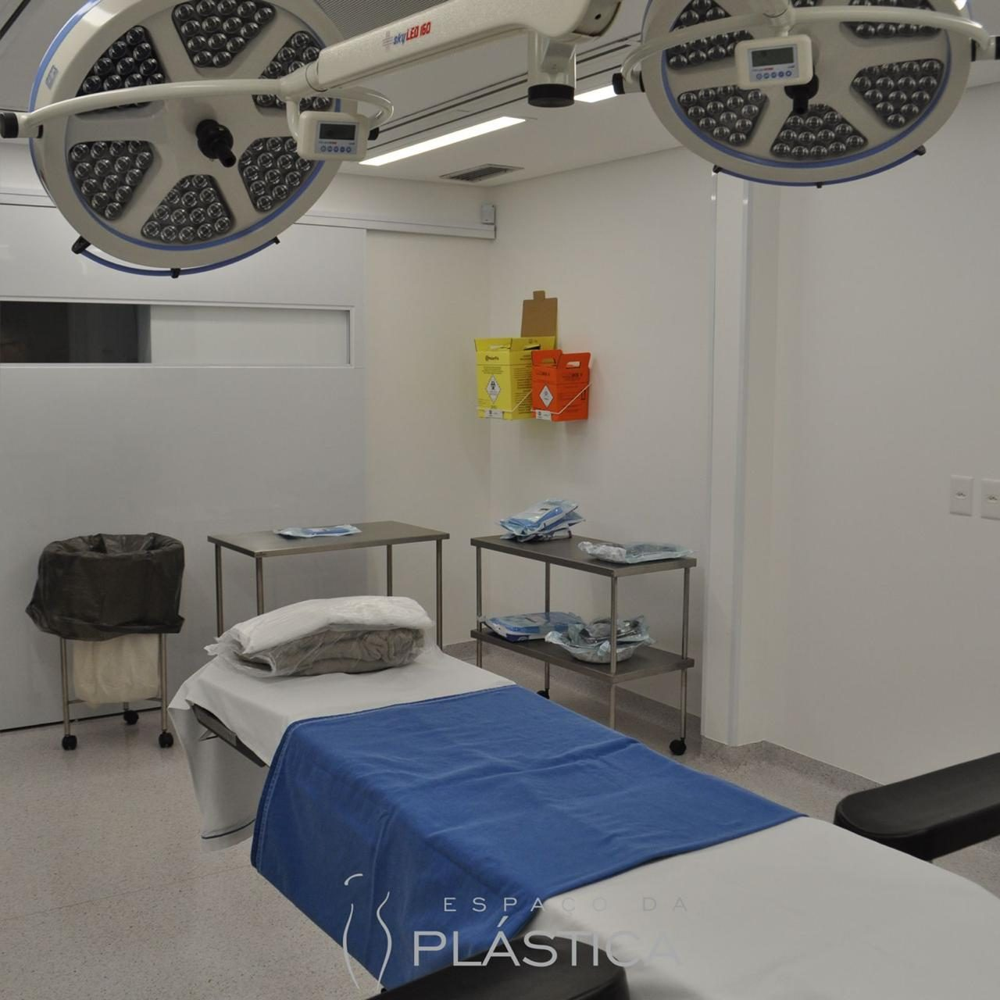
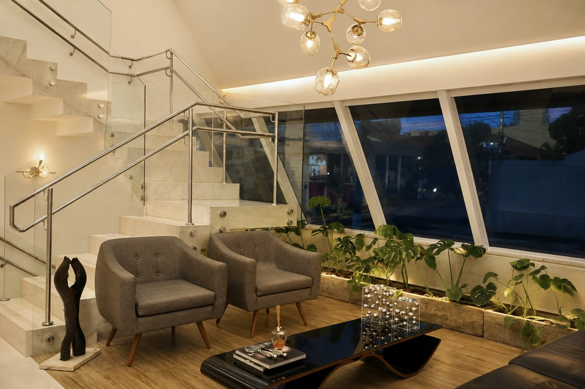
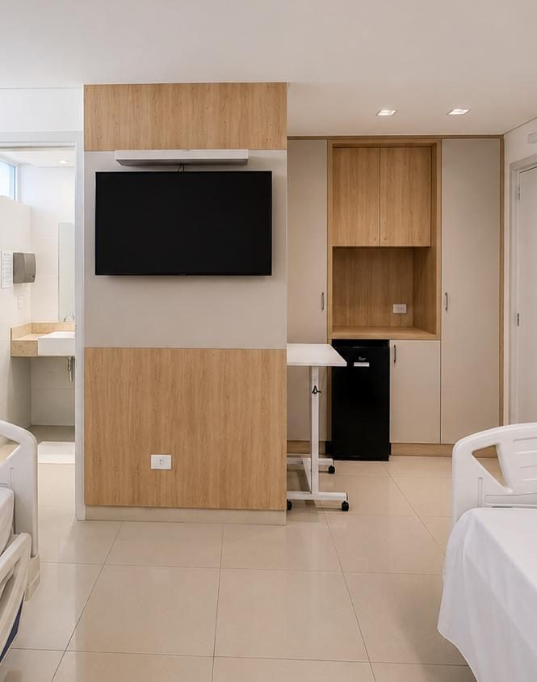
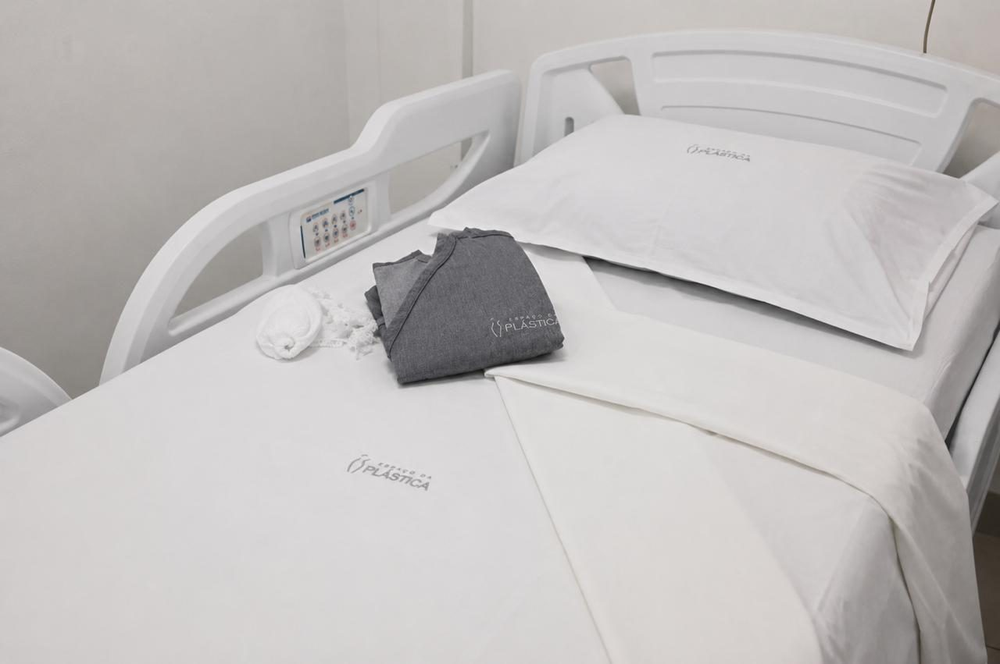
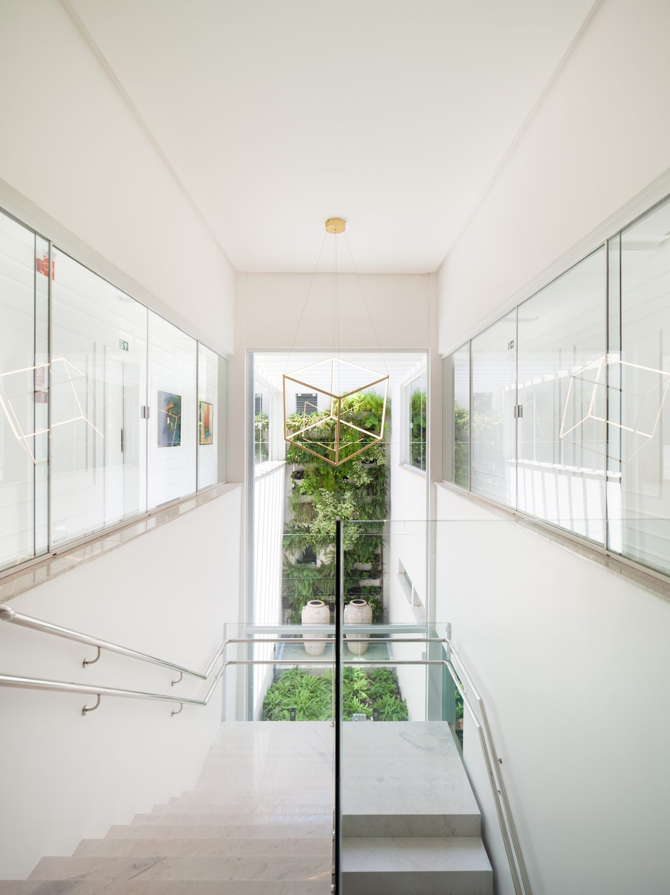

Hotelaria
Os primeiros dias depois de uma cirurgia pedem silêncio, conforto e gente atenta. Nossa hotelaria existe para isso — e para mais nada.
A ideia
Hospital costuma ser lugar de pressa. O nosso foi pensado para o contrário: os dias de recuperação merecem o ritmo, a discrição e o acolhimento de uma boa hospedagem.
O conforto não substitui o cuidado clínico — organiza-se ao redor dele. Cada detalhe existe para que o descanso aconteça sem esforço: a única tarefa dos primeiros dias é descansar.

Hotelaria
Quarto privativoO quarto
A porta que fecha, a luz que obedece, a cama arrumada com esmero. Nenhuma recuperação aqui é dividida.
Um espaço só seu para os dias que pedem recolhimento — sem ambientes compartilhados.
Roupa de cama e banho escolhidas para os dias em que o conforto deixa de ser detalhe.
Num hospital sem pronto-socorro, não há urgências cruzando corredores: o som ambiente daqui é quase nenhum.
A noite
Luz baixa, vozes baixas, passos leves. A noite foi feita para dormir — inclusive num hospital.
Acompanhante
Ter alguém de confiança por perto muda os primeiros dias — na conversa que distrai, no copo d'água alcançado, na presença que acalma.
Nossa equipe orienta como funciona o acompanhamento durante a permanência no hospital. Combine os detalhes na sua avaliação.

Companhia
EquipeEquipe
Do pós-anestésico à alta, os sinais vitais são acompanhados pela equipe do hospital — uma equipe que vive cirurgia plástica todos os dias.
Atenção, aqui, não é protocolo decorado: é a proximidade de quem conhece o seu caso e está a poucos passos do seu quarto.
Alta assistida
A saída acontece com orientações claras de pós-operatório e consultas de seguimento marcadas com o cirurgião. O cuidado continua em casa — e volta ao hospital a cada retorno.
Internação, permanência e alta seguem sempre critério médico individual: o conforto organiza a experiência; a decisão é clínica.

Alta assistidaEm imagens
Quartos, texturas e ambientes pensados para os dias de recuperação.

Quarto privativo
Estar
Detalhes
Enxoval
CirculaçãoAgende sua avaliação
Conte o que você deseja e tire suas dúvidas sobre a recuperação. Nossa equipe retorna pelo WhatsApp para agendar sua avaliação com um dos cirurgiões.